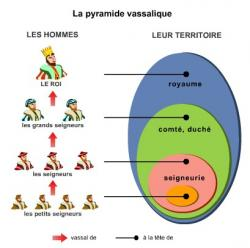

MACLASSE.COM

La féodalité est un système politique qui apparait au moyen-âge. C'est une organisation de la société fondée sur un système pyramidal. En haut de la pyramide, se place le personnage le plus important, et tout en bas les moins importants. On représente souvent ce système avec le roi au sommet, les paysans en bas, et les seigneurs et chevaliers aux étages intermédiaires.
Le personnage qui se situe au sommet est le suzerain des personnages de l'étage en dessous, ces derniers étant les vassaux du personnage le plus important.
Ces Vassaux peuvent eux-même être suzerains de vassaux de niveaux inférieurs
La féodalité, du latin "fief" commence à l'époque de Charles Martel qui désire réorganiser son armée, essentiellement composée de fantassin qui s'équipent à leur frais.
Il désire équiper son armée d'une cavalerie, à l'image des arabes qu'il a combattus à Poitiers. Mais l'équipement de cavalerie et l'entretien d'un cheval de guerre coûtent cher. Pour permettre aux soldats les plus valeureux de pouvoir financer ces dépenses, des terres leurs sont distribuées. En échange, ces soldats doivent s'équiper et fournir un service militaire en faveur du maire du palais.
Ce système féodal sera renforcé du temps de Charlemagne, qui divise son Empire en Comté. Chaque Comte est responsable du territoire qui lui est attribué, à charge pour lui de respecter les lois en vigueur et de reverser la part d'impôts qui revient à l'Empereur.
Par la suite, les grands seigneurs du royaume doivent défendre leurs immenses domaines contre les invasions vikings, sans espérer d'aide des rois carolingiens qui perdent de leur autorité. Pour ce faire, ils donnent des terres ou fiefs à des petits seigneurs ou chevaliers qui se mettent à leur service. La france est alors découpée en une multitude de fiefs, chacun géré par un vassal, qui dépend d'un seigneur plus puissant que lui, qui lui-même peut être vassal d'un suzerain encore plus important.
Pour marquer le lien entre le suzerain et son vassal, une cérémonie est organisée. Elle se déroule en trois temps :
Un hommage en 1127
« Le comte demanda au futur vassal s'il voulait devenir son homme sans réserve, et celui-ci répondit : "Je le veux" ; et ses mains étant jointes dans celles du comte qui les étreignit, ils s'allièrent par un baiser. En second lieu, celui qui avait fait hommage engagea sa foi en ces termes : "Je promets en ma foi d'être fidèle à partir de cet instant au comte Guillaume et de lui garder contre tous et entièrement mon hommage, de bonne foi et sans tromperie" ; il jura cela sur la relique des saints. »
Gilbert de Bruges, Histoire du meurtre de Charles le Bon, comte de Flandre
Le serment du vassal au seigneur
« Tout le monde sait que je n'ai rien pour me nourrir et me vêtir. C'est pour cela, mon seigneur, que j'ai sollicité votre miséricorde, et vous avez bien voulu me l'accorder, la faveur de me placer sous votre protection. Je le fais à condition que vous me donniez de quoi vivre, en échange de mes services... Tant que je vivrai, et bien que demeurant libre, je vous servirai avec fidélité. Mais en échange, je resterai toute ma vie sous votre pouvoir et votre protection. »
Chroniques de Jean Froissard, XVe, (Bibliothèque nationale de France)
| SUZERAIN | VASSAL |
|---|---|
| - Protection : contre les attaques et agressions. | - Aide militaire : garde du château; participationaux campagnes militaires du suzerain. |
| - Aide et justice : en cas de problème avec d'autres seigneurs. | - Aide financière : participation au financement des croisades, du mariage de la fille aînée, de l'adoubement du fils aîné et aux demandes de rançon en cas de capture du suzerain. |
| - L'entretien : en donnant des terres, ou en donnant une aide financière et matérielle. | - Conseil : pendant les guerres et les décisions de justice du suzerain. |
Tu veux en savoir plus, voici un livre interactif sur la féodalité:
As-tu compris et retenu cette leçon? Es tu capable de répondre à quelques questions?
- Quel nom donne-t-on au personnage le plus important du système féodal ?
- Quel nom donne-t-on au personnage en bas du système féodal ?
- Comment s'appelle le terrain donné à un vassal ?
- Quelles sont les trois parties de la cérémonie de vassalisation ?
- Cite les trois devoirs du suzerain.
- Cite les trois devoirs du vassal.
Le système féodal se représente par une pyramide. Au sommet il y a le suzerain, et à l'étage en dessous on trouve plusieurs vassaux sous ses ordres. Un vassal jure fidélité à son suzerain lors d'une cérémonie. En échange, le suzerain octroie un fief à son vassal. La féodalité est un contrat qui comporte des obligations (financières, militaires, juridiques) pour les deux parties.
Mentions légales / Qui sommes-nous ? / Plan du site
Nos matières : français - mathématiques - histoire - sciences - arts visuels